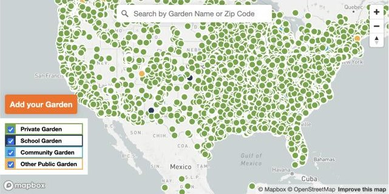

Green America
Nearly seven years of hands-on product ownership
I was Green America’s only product manager and on-site web developer, responsible for five web properties. I kept the main website running, worked with staff across the organization to set priorities, and led the technical planning for a major redesign.
The main site served roughly 935,000 annual users and supported more than $650,000 in tracked online revenue from mid-2023 through May 2026.
What I inherited
I joined Green America shortly after a new Drupal website had launched. The organization expected to start building new campaign tools, but much of my early work involved getting the existing site to work reliably.
Related content wasn’t appearing correctly. Staff struggled to find articles through the site’s search. Two campaign maps couldn’t display all the locations in their datasets.
The Green Business Network also ran within the same Drupal installation, with its own theme and directory. Changes needed to account for both experiences.
I handled front-end problems myself and coordinated with outside developers on backend issues. Alongside the immediate fixes, I had to decide when a feature was worth repairing and when a different approach would serve the organization better.
Keeping the platform useful
Fixing the problems people encountered every day
For roughly the first two years, a large part of the job was making the existing website dependable: fixing rendering problems, debugging Drupal Views, and making sure related content appeared where it should.
Some problems were easier to understand by talking to staff than by reviewing a backlog. When colleagues said they couldn’t find articles they had recently published, I replaced the Drupal search with Google site search in fall 2020.
Once tracking was in place, the replacement handled approximately 55,000 searches from January 2022 through May 2026.
That work wasn’t a new product launch, but it made the website more useful to the people publishing on it and the people trying to find their work.
Moving the maps to tools that could support them
The bank map and Climate Victory Gardens map both held thousands of locations, but their Drupal implementation couldn’t display the full datasets.
For the bank map, I moved the data to Google My Maps. It was a straightforward interim solution: every institution appeared, and the campaign had a working tool. Several years later, I led the launch of its standalone replacement, Get a Better Bank.
The gardens map needed a different approach. I advocated for Mapbox after speaking with someone at a peer organization who had used it for a similar tool, then oversaw the rebuild and its registration form.
Because the gardens were at people’s homes, I also pushed to keep addresses hidden, offset the map pins, and exclude user-to-user contact features.
Keeping a 30,000-garden map updated
As the gardens dataset approached 30,000 registrations, Mapbox’s upload tool hit a limit. We still needed to add individual registrations and batches from a campaign partner.
I wrote a Python script, with LLM assistance, to upload the data through the Mapbox API. That became the ongoing update method.
The map didn’t need another rebuild. It needed a way to keep accepting data at the scale the campaign had reached.

Working within the budget
As funding for outside development decreased, I brought more coding work in-house.
I used an LLM to help write and debug code, then reviewed and tested the changes before putting them into production. That let me handle work we would previously have sent to outside developers.
I used the same approach to support quarterly payment-card compliance work: translating scanner findings into plain language, checking them against the site, and drafting responses.
These were practical ways to keep necessary work moving with less outside support. I remained responsible for checking the work before it went live.
Planning the redesign
Fixes kept the site running, but they didn’t remove the underlying maintenance burden. Even relatively small projects could require specialist development work and long lead times.
Around 2023, we began discussing a broader redesign and migration from Drupal to WordPress. I helped make the case by explaining where the existing architecture was costing staff time, requiring outside support, and limiting what we could change.
My work included:
- Developing the RFP and evaluating vendors.
- Mapping technical requirements and reviewing implementation details.
- Coordinating with a six-person international development team.
- Building a page-by-page spreadsheet comparing the existing site with the development site.
- Planning redirects and supporting testing.
When my role ended in May 2026, the team had been selected and work was underway on wireframes and content migration. The redesign had not yet launched.
The platform in numbers
The revenue figure describes the website ecosystem I supported—not revenue I generated independently. Many donation and action forms lived on third-party platforms; I maintained the navigation, calls to action, and website experience that helped people reach them.
Organic search engagement also rose from approximately 54% in 2022 to 68% in January–May 2026. That was useful context alongside traffic volume, though it wasn’t a measure of any single change.
What I’d do differently
Make the cost of maintenance visible sooner
I would have built a clearer case for the redesign earlier.
We knew the platform was difficult to work with, but individual problems could look like isolated requests. Tracking staff time, vendor costs, and delayed projects would have made the cumulative cost easier to discuss and compare with the investment in a replacement.
Bring performance data into the work earlier
Revenue tracking began in mid-2023. When I reviewed the analytics, I found more than $650,000 in tracked revenue through May 2026—a figure that hadn’t previously been part of my product reporting.
I’d establish a shared dashboard earlier, covering revenue, key user actions, and platform health. Those measures would give staff and leadership a more consistent basis for setting priorities.